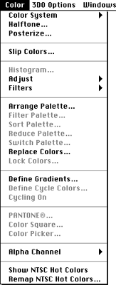
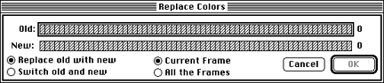
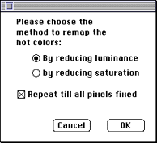

Figure 1: Color menu.
Note: If you modified the palette using Arrange Palette, Sort Palette, Reduce Palette, or Switch Palette, the colors in all frames of the animation are automatically remapped, if necessary.

Figure 2: Replace Colors dialog.
Start by selecting the colors you want to use; then choose Invert to lock out the colors you don't need. If you then display a palette, it only contains colors not specified as locked.
Show NTSC Hot Colors command
When you select Show NTSC Hot Colors, 3DO Animator displays a dialog
showing each color from the current image or cel whose luminance or
saturation exceeds the range for "safe" display on an NTSC monitor. Colors
in the NTSC "hot" range cause display distortion on NTSC screens.
If the current image or cel has 8 bits per pixel or fewer, the hot colors are shown on the NTSC hot palette. If the image or cel has 16 bits per pixel, the hot colors are marked in the P-Mode buffers.
To remap the hot colors, use the Remap NTSC Hot Colors command discussed below.

Figure 3: Remap NTSC Hot Colors dialog.
3DO Animator lets you adjust NTSC hot colors in two ways: by reducing saturation or by reducing luminance. Some colors may have to be reduced twice to "cool down." If you check the "Repeat till all pixels fixed" box, the remapping automatically repeats until all the hot colors are fixed.
To verify that the colors are cooled down, select the Show NTSC Hot Colors command again.